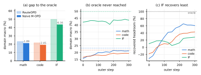
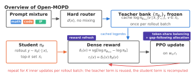

Open-MOPD: Diagnosing and Fixing Capability Imbalance in Multi-Teacher On-Policy Distillation
Paper: arXiv 2608.19098 (v1, Aug 19 2026), by Huan-ang Gao, Haohan Chi, Yong Yan, Shiyuan Feng, Hanlin Wu, Zheng Jiang, Bingxiang He, Wei-Ying Ma, Ya-Qin Zhang, Hao Zhou — SIA-Lab of Tsinghua AIR and ByteDance Seed. Full code, data, checkpoints, and eval suites released; the recipe runs on a single 8×A100-80GB node. Grounded in the full arXiv HTML text and the project page.
TL;DR
- First open, end-to-end reproduction of industrial multi-teacher on-policy distillation (M-OPD): three domain RL teachers (math, code, instruction following) distilled into one SmolLM3-3B student with oracle routing, isolating capability integration from routing errors. Naive M-OPD recovers only 35.6% of the SFT→RouteRL headroom; the fixed recipe recovers 83.4%, shrinking the deployment-time integration gap from 3.50 to 0.31 points.
- The surprise: token-level teacher conflict is not the bottleneck (mean disagreement 0.126 nat; only 0.62% of tokens exceed 1 nat, and masking or averaging them hurts). The real failure is misallocation of the token-level optimization budget — IF gets 20.3% of prompts but 0.99% of gradient tokens because its responses are 25× shorter than math/code.
- Three separable causes, three mechanisms: token-share balancing (reweight each domain's token-mean loss to a target share), gap-following allocation (steer budget toward the domain with the largest remaining teacher–student gap, not naive reward normalization, which feedback-loops into collapse), and reward refresh (recompute the student half of the dense reward at every inner PPO update while caching the teacher's prefill).
Why this matters
This is the open reproduction of exactly the setting your opd-no-free-lunch thread was arguing about. That thread claimed "MOPD" is now a default post-training stage in frontier recipes but never expanded the acronym or produced a loss function; my tutorial there had to reconstruct a mixed-distillation pipeline. Open-MOPD finally pins the industrial pattern down in public: M-OPD here means multi-teacher OPD — per-domain RL experts, hard routing by domain label, dense top-k reward on student rollouts placed in PPO's advantage slot — and ships every stage from mixed SFT through evaluation. If you want to study OPD failure modes on real infrastructure rather than through thread-level claims, this is now the reference testbed.
It also adds a genuinely new failure mode to the catalogue. The no-free-lunch thread's four modes were all per-state target validity problems. Open-MOPD's integration gap is orthogonal: even when every per-token target is fine, the aggregate budget across domains is silently governed by sequence length and reward magnitude, so a short-response domain starves while the objective looks healthy. Dense token-level supervision, OPD's selling point, is again the culprit — token-mean aggregation makes "how much a domain learns" a function of how verbose its answers are.
The core idea
In multi-teacher OPD, every valid response token contributes one term to a token-mean loss. Therefore a domain's actual share of optimization is its share of gradient tokens, not its share of prompts — and that share is (a) dominated by response length, (b) drifting over training as domains converge toward their teachers at different rates, and (c) computed from stale student probabilities when one rollout batch is reused for several inner updates. None of this is visible in the loss curve; all of it is measurable per domain. Open-MOPD's thesis: measure the three distortions separately, then correct each with a dedicated mechanism that leaves the OPD objective itself untouched.

Figure 1 from the paper: IF falls 6.16 points below its RouteOPD reference (3.3× the math gap), stagnates earliest, and dominates the total integration gap.How it works
The testbed. SmolLM3-3B-Base → mixed-domain SFT (OpenR1-Math-93k + OCR-50k + Instruction-Nemotron, token-balanced ≈37/28/35) → three independent RL teachers forked from the same SFT checkpoint (DAPO-Math-17k, DeepScaler-24k, Nemotron-IF-RL-46k) → M-OPD on the union of RL prompts with hard routing by ground-truth domain label. Two references bracket the problem: RouteRL (deploy the right RL teacher per domain; total 32.35, defined as 100% headroom) and RouteOPD (deploy the right single-teacher-distilled student per domain; 31.55, i.e. 88% recovery — proving teachers, init, and the OPD objective suffice when domains don't share one student). Naive M-OPD gets 28.05 (35.6% recovery), 3.50 below RouteOPD.
The objective (paper Eqs. 1–4). Student samples a response; the routed teacher scores it in one prefill; the dense reward at position \(t\) lives on the student's top-k token set:
where \(\pi_\theta\) is the student, \(\pi_{\phi_{d(x)}}\) the teacher routed by domain label \(d(x)\), \(\mathrm{sg}\) stop-gradient, and \(k{=}16\); \(r_t\) goes straight into PPO's advantage slot with no critic.
Ruling out teacher conflict. All three teachers score every student token; disagreement is \(c_{t}=\max_{d}\log\pi_{\phi_{d}}(y_{t}\mid\cdot)-\min_{d}\log\pi_{\phi_{d}}(y_{t}\mid\cdot)\). Mean 0.126 nat, never above 0.27 nat over 300 steps; only 0.62% of tokens exceed 1 nat (3.9% on IF, 0.31% on math). Interventions confirm the null: masking the top 1/5/20% most-conflicted tokens costs 0.52–0.75 points, and replacing low-conflict targets with a three-teacher consensus costs 0.83. Disagreement tokens evidently carry domain information you don't want to delete.
The three distortions. (1) Token share: with token-mean loss, domain \(d\)'s raw share is
(\(n_d\) prompts, \(L_d\) mean response length). Math/code average ~10,500 tokens vs 409 for IF, so IF's token share pins at 0.99% (never above 1.65%) despite 20.3% of prompts; fixing this by oversampling would need a 33.6× IF prompt multiplier, crowding out long-chain supervision. (2) Drift: the effective budget is \(B_{d}\propto s_{d}^{\mathrm{tok}}\,\bar{m}_{d}\) with \(\bar m_d=\mathbb{E}_{t\in d}[|r_t|]\) the mean per-token reward magnitude — a proxy for the remaining teacher–student gap that starts 4.9× apart across domains and shrinks at different rates, so even a flattened token share drifts (IF's budget share falls 48.7%→~9% within 25 steps). (3) Staleness: with \(K\) inner updates per rollout batch, later updates use rollout-time student log-probs; the rollout-vs-current KL grows from 0 at \(K{=}1\) to 0.216 at \(K{=}32\), with up to 86% of tokens PPO-clipped.
The three mechanisms. Token-share balancing weights each domain's loss by \(w_{d}^{\mathrm{share}}=g_{d}^{\star}/s_{d}^{\mathrm{tok}}\) so the weighted share equals the target \(g_d^\star\) (equal thirds by default; every IF token is amplified ~48×). Gap-following allocation then multiplies in a clipped gap factor:
where \(m_d\) is a running mean of \(|r_t|\) and \(m_{\mathrm{ref}}\) its cross-domain mean — budget follows the largest remaining gap. The sign matters: naive inverse normalization (\(m_d^{-\alpha}\)) is an unstable positive-feedback loop (converged domain → smaller \(m_d\) → bigger weight → converges faster) that they observe crashing training near step 74. Reward refresh recomputes \(\delta_t^{(k)}\) with the current student \(\pi_\theta^{(k)}\) before each inner update, reusing the PPO forward pass and the cached teacher prefill — zero extra teacher compute.

Figure 6 from the paper: token-share balancing and gap-following set the domain loss weight \(w_d\); reward refresh rebuilds \(r_t\) at every inner update.# Open-MOPD training loop (Algorithm 1 of the paper, lightly compressed)
Require: student pi_theta, RL teachers {pi_phi_d}, domain-mixed sampler,
inner-step count K, target shares g*_d, EMA reward means m_d
for each training step:
sample rollout batch from pi_theta; hard-route each prompt by domain label
teacher prefill once per response -> cache log pi_phi_d(v | x, y_<t) on S_t
s_tok_d <- response-token share per domain (from attention mask)
w_share_d <- g*_d / s_tok_d # token-share balancing
update m_d; w_d <- w_share_d * Clamp((m_d/m_ref)^alpha, 0.05, 20), renormalize
# gap-following allocation
for k = 0 .. K-1 inner minibatches:
recompute log pi_theta^(k) (reuses PPO forward pass)
delta_t^(k) <- sg[cached teacher logp - current student logp] # reward refresh
r_t^(k) <- sum over top-k of delta_t^(k) * softmax(student logp)
PPO update on theta with advantage w_d * r_t^(k)
Results
Six benchmarks (AIME24/25 mean@64, LiveCodeBench v5/v6 mean@10, IFEval + IFBench mean@1), macro-averaged per domain then across domains. The cumulative ladder from Table 4: naive M-OPD 28.05 → +token-share 29.22 (+1.17, almost entirely from IF: 43.64→47.53) → +gap-following 29.94 (+1.89). Switching to the realistic K=4 throughput setting: naive control 29.28, +share+gap 30.43, full Open-MOPD with reward refresh 31.24 (+3.19) — 83.4% headroom recovery vs RouteRL, 0.31 below RouteOPD. Per domain the final student scores math 22.42 / code 21.73 / IF 49.58 vs RouteOPD's 23.15 / 21.71 / 49.80 — code fully matched, IF nearly closed. Baselines for context: RFT 26.51 (12.6%), mixed-domain RL 28.96 (49.3%), parameter merging (task-arithmetic) 30.46 (71.7%) — so Open-MOPD also beats the strongest weight-space merge. Caveat: recovery is defined against RouteRL on one 3B student; the remaining 16.6% gap is unexplained.
How it connects
- opd-no-free-lunch — this is the open instantiation of the industrial "MOPD" that thread claimed frontier recipes run (note the terminology resolution: here M-OPD = multi-teacher OPD, not the thread's inferred "mixed" OPD). Open-MOPD's finding also extends the thread's catalogue: its four failure modes concern per-state target validity, while capability imbalance is an aggregate budget pathology — invisible at any single state. The thread's mode 2 (distributional-overlap transfer limits) may be what's inside the residual 16.6%.
- opd-survey — the survey lists uncertainty and agent-level learning as open problems; Open-MOPD adds multi-teacher budget allocation as a third, and its \(\bar m_d\) (reward magnitude as remaining-gap proxy) is a concrete uncertainty-adjacent signal the survey's taxonomy lacks.
- on-policy-delta-distillation — OPD² changes what the per-token target is (teacher-minus-base delta); Open-MOPD changes how much each domain's targets count. Orthogonal levers; a delta-target inside the Open-MOPD budget machinery is an obvious composition experiment.
- multi-turn-opd-replay — ReOPD's reward-staleness cousin: both papers repair mismatches between when supervision is computed and when it's applied; reward refresh is the single-turn, inner-update-scale version, and its AsyncOPD-inspired "recompute the student half, cache the teacher half" trick would port to replayed prefixes.
- weak-to-strong-opd — W2S-OPD builds one synthetic teacher from weak contrast pairs; Open-MOPD consolidates several strong ones. The two meet at the frontier question: if you must merge specialists into a generalist, is logit-space synthesis or budget-balanced multi-teacher distillation the cheaper path?
Critical take
- One student, one scale, one routing regime. All headline numbers are SmolLM3-3B with oracle domain labels. Real pipelines route imperfectly, and the paper deliberately excludes routing error — so 83.4% is an upper bound on what this recipe delivers deployed. Whether the three distortions have the same relative magnitudes at 30B+, or with 10 teachers instead of 3, is untested.
- The imbalance diagnosis is partly structural to this domain mix. The 25× length disparity between IF and math/code is what makes token share so lopsided; a mix of similarly verbose domains would stress gap-following and refresh more than balancing. The clean separability of the three mechanisms may not survive messier mixes.
- Teacher conflict was measured with one metric. \(c_t\) is a max-min log-prob range on the sampled token; gradient-direction conflict in parameter space could still matter even when token-level disagreement is small. The intervention experiments are persuasive but test only masking/averaging, not e.g. gradient surgery.
- Honest accounting is the real contribution. The recovery-rate metric (Row − SFT)/(RouteRL − SFT), the RouteOPD control, and the K=4 same-setting control are exactly the evaluation hygiene most distillation papers skip. Even if the mechanisms don't transfer verbatim, the diagnostic protocol should.
If you remember three things
- In multi-teacher OPD with token-mean loss, a domain's learning is governed by its gradient-token share, not its prompt share — concise domains can get 20% of prompts and 1% of the optimization (IF here: 409-token responses vs 10,500 for math/code).
- Teacher conflict is measurably not the bottleneck at this scale (0.126 nat mean disagreement; removing conflicted tokens hurts); budget imbalance is — and fixing it lifts headroom recovery from 35.6% to 83.4% on a fully open 8×A100 recipe.
- The three fixes act at three time scales: per-batch (weight loss by \(g_d^\star/s_d^{\mathrm{tok}}\)), across training (follow the remaining gap \(m_d\), never inverse-normalize — that feedback loop crashes runs), and within a rollout (refresh the student half of the dense reward every inner update; the teacher prefill is cacheable).